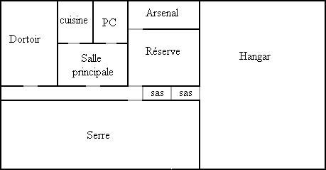

Le jeu de rôles de la Compagnie des Glaces
Britanny Network
L'enquête sur le réseau Bretagne
Informations générales sur le Réseau Bretagne
Ponctualité : comme partout dans la Compagnie, il y a un certain retard dans les transports, que l'on soit dans une draisine particulière ou dans un train.
| Liaison | Durée normale du trajet | Retard |
|---|---|---|
| Anjou Star Station - Britanny Star Station | 4 h | 1D10 |
| Anjou Star Station - Mount Cross Station | 3 h | 1D6 / 2 |
| Anjou Star Station - Uranium Station | 5 h | 1D6 / 2 |
| Beef Station - Britanny Star Station | 3 h | 1D6 / 2 |
| Beef Station - Fish Station | 1 h | 1D6 / 2 |
| Beef Station - Fruit Station | 3 h | 1D6 / 2 |
| Beef Station - Stones Y Station | 1 h | 1D6 / 2 |
| Brest Station - Fruit Station | 4 h | 1D10 |
| Brest Station - Quimp Station | 2 h | 1D6 / 2 |
| Brest Station - West Station | 3 h | 1D6 / 2 |
| Britanny Star Station - Fruit Station | 3 h | 1D10 |
| Britanny Star Station - Ligara Station | 4 h | 1D6 / 2 |
| Britanny Star Station - Mount Cross Station | 4 h | 1D6 / 2 |
| Britanny Star Station - Saint Michel Station | 2 h | 1D6 / 2 |
| Channel Station - Iron Station | 3 h | 1D6 / 2 |
| Channel Station - Saint Michel Station | 4 h | 1D6 / 2 |
| Fish Station - Quimp Station | 2 h | 1D6 / 2 |
| Fish Station - Stones Y Station | 1 h | 1D6 / 2 |
| Fruit Station - Saint Michel Station | 2 h | 1D6 / 2 |
| Iron Station - Mount Cross Station | 2 h | 1D6 / 2 |
| Iron Station - Saint Michel Station | 3 h | 1D6 / 2 |
| Ligara Station - Stones Y Station | 3 h | 1D6 / 2 |
| Ligara Station - Uranium Station | 4 h | 1D6 / 2 |
Etat des voies : il est en général correct sauf la ligne Channel Station - Jersey Station - Saint Michel Station qui est coupé par endroit.
Acquisition de draisine : il y a deux possibilités, soit en louer une (bon état, boite de priorité verte, 100 $ par jour plus 5 000 $ de caution), soit en acheter une d'occasion (état moyen, boite de priorité verte, 2 000 $). Ces deux possibilités n'existent qu'à Britanny Star Station et Brest Station.
Les actionnaires demeurant au Réseau Bretagne
Mino Kerb est patron d'usines de fabrications mécaniques. Son père, Irb Kerb, a eu des démêlés avec la Sécurité, par une accusation truquée d'espionnage pour la Panaméricaine. En 2348, Mino Kerb signe avec la Zone Occidentale un traité commercial qui lui donne l'exclusivité des produits en verre. On le soupçonne de tremper dans des trafics et des meurtres. Sa ligne privée part de la ligne Brest Station-Quimp Station, peu avant cette seconde station.
Van Erkas est néo-catholique et vit de ses rentes. Des bruits court selon lesquels il aurait participé à la fausse accusation contre Irb Kerb, et qu'il en a profité pour étendre ses activités. De violents échanges verbaux avec Mino Kerb dans le passé font qu'il vit reclus dans sa propriété privée. Il n'est donc pas approchable et ses gardes tirent à vue sur tout ce qui se présente, après sommation.
Andre Gelaric vit de ses dividendes dans un palace sur rail à l'écart du réseau, près de Fruit Station.
Informations à glaner dans les stations
Anjou Star Station :
Sur le quai, à l'arrivée du train, il y a un cadavre décapité et mutilé. La nouvelle du meurtre fait rapidement le tour de la station et des trains. En écoutant les conversations dans les bars, on peut apprendre que la victime a été identifiée et est Jord Lern, un fermier habitant une trentaine de kilomètres à l'est de la station. Si les joueurs se rendent à la ferme, Ekjia Lern, la femme de Jord, effondrée par la nouvelle, répondra à contrecoeur aux questions des VJ et les congédiera le plus vite possible. Un VJ particulièrement attentif et psychologue remarquera qu'elle semble terrifiée à l'idée d'en dire trop.
Voir aussi : les Fermes de la Breitz.
Brest Station :
En enquêtant des les bas-fonds, ils peuvent apprendre qu'un ivrogne avait dit avoir vu des gardes de Mino Kerb jeter un corps décapité lors des meurtres de 2357. Cet ivrogne fut lui-même retrouvé décapité.
Conversation entendue dans un train bar "Il y a beaucoup de traffic sur la ligne privée des Kerb... - Tait toi, si tu veux garder la tête sur les épaules", répond un autre consommateur qui quitte immédiatement le bar.
Voir aussi : un train arrive de Zone Occidentale.
Channel Station :
Voir : un train arrive de Zone Occidentale.
Fruit Station :
Voir : un train arrive de Zone Occidentale.
Iron Station :
Voir : les Fermes de la Breitz.
Ligara Station :
Ann Elase, la mère de Guéni Vonru, est encore vivante. Elle dira qu'elle a été très surprise de la conversion de fils, qui était franchement athée auparavant et attribue ce changement à un certain Wen Kerb. Elle ne l'a pas vu depuis son entrée au monastère.
Mount Cross Station :
Rien à apprendre de plus que ce qu'il y a dans le dossier. Les joueurs ne seront pas reçus au train-monastère.
Voir : les Fermes de la Breitz.
Quimp Station :
Le soir, dans les bas-fonds de la station, les voyageurs assistent à une agression : trois hommes attaquent un traine-wagon. Si les joueurs lui portent secours et le sauve, il racontera son histoire : il fut recruté par une secte pour effectuer des coups de main. Il a été entrainé au combat dans une station secrète qui se trouverait au sud-ouest de Quimp Station et qui se nommerait Ys Station et a participé à plusieurs actions contre des fermiers. Par hasard, il apprit que la secte préparait un soulèvement contre la TransEuropéenne et, pris de peur, il s'enfuit de la station. Trois membres le poursuivirent et viennent de tenter de le tuer.
Saint Michel Station :
Voir aussi : un train arrive de Zone Occidentale.
Stones Y Station :
Rien à apprendre sur l'affaire du GID.
Uranium Station :
Voir : les Fermes de la Breitz.
Informations à glaner auprès des sectes
Si des joueurs sont membres de sectes, ils peuvent obtenir quelques informations :
Un train arrive de Zone Occidentale
Ce convoi suit l'itinéraire Glass Station, Channel Station, Jersey Station, Saint Michel Station et Brest Station, Officiellement, il transporte des produits manufacturés en verre, mais des armes y sont dissimulés, avec la complicité de Jdaig, un demi-roux de la Zone Occidentale. Il roule deux fois par semaine.
Les joueurs, s'ils sont dans l'une gares traversée par le train ne manqueront pas de remarquer qu'il vient de Glass Station (indique sur chaque wagon du convoi, ainsi que la destination), car depuis la création de la Zone Occidentale, les TransEuropéens n'ont pas de contact avec cette compagnie dirigée par des Roux. Des habitants de la station pourront dire que cela fit scandale au début (2348), mais que l'on avait fini par s'habituer.
Il faut une heure pour fouiller un wagon, en prenant la précaution de ne rien casser (il y a aussi des produit en verre emballés), et les chances d'être surpris par un membre du personnel accompagnant le train est de 15 %.
A l'arrivée à Brest Station, le convoi entre dans un entrepôt (très surveillé ; si les joueurs veulent y entrer discrètement, ils ont 40 % de chances d'être découverts ; ils pourront observer le déchargement des armes). Les armes y sont regroupées et chargé dans une draisine qui part vers le sud en direction de Quimp Station, mais qui quittera la voie principale peu avant la station (il s'agit de la voie privée de Mino Kerb).
Dans certaines régions du réseau Bretagne la secte cherche à acquérir des fermes pour les transformer en avant-poste capable de résister aux unités blindés de la TransEuropéenne. Ce sont les lignes rejoignants Iron Station, Mount Cross Station, Anjou Star Station et Uranium Station. Chaque ferme devient une unité de combat et est le point de départ d'un réseau secret chargé de surveiller les lignes normales.
Les agents de la Secte ne lésinent pas sur les moyens pour convaincre les fermiers de leur vendre les fermes : menaces, chantages, intimidation, puis assassinat. C'est dans ce cadre que rentre le meurtre de Jord Lern à Anjou Star Station.
Enquêter sur les fermes
Les joueurs peuvent visiter jusqu'à six fermes par jour. A chaque fois, le meneur de jeu lancera un D6 :
1 : C'est une ferme déjà achetée par la Secte. Les habitants répondront aux questions, sans rien révéler de la secte. Si les joueurs demandent ce qui peut effrayer d'autres fermier, ils diront qu'il y a pas mal de Roux qui circulent, mais que eux sauront les recevoir. Si les joueurs montrent qu'il en savent trop, il seront connu de la secte et risqueront d'être attaqués dans les jours qui suivent.
2-5 : la ferme est occupée par des fermiers déjà menacés par la Secte et sur le point de céder et de quitter le réseau. Il ne voudront rien dire aux joueurs, mais ceux ci pourront remarquer qu'ils sont aussi terrifiés que la veuve de Jord Lern. Si les joueurs surveillent la ferme dans les jours qui suivent, ils verront une locomotive venir au bout de deux jours, puis les anciens occupants partiront à bord de leur draisine en emportant tous leurs bagages. Un jour plus tard, ils verront arriver une poseuse de rails qui commencera à créer un réseau derrière la ferme.
6 : les fermiers ont déjà été menacés par la Secte, mais refusent de céder. Il le dira aux joueurs, ajoutera qu'il a subit des sabotages et même d'une tentative de meurtre à la station la plus proche. Si les joueurs sont patients, durant la nuit qui suit, des inconnus viendront et tenteront de saboter la draisine. Ils seront découverts et s'enfuiront, mais si les joueurs les poursuivent, leur draisine rejoindra une ferme déjà achetée par la Secte.
Fouiller une ferme de la Secte

Si les joueurs utilisent une locomotive pour s'approcher de la ferme, ils seront automatiquement repérés. S'ils marchent le long de la voie, ils ont une chance sur trois d'être repéré par des caméras. Sinon, ils peuvent suivent une marche parallèle à la voie, à vingt mètres d'écart.
La ligne particulière de la ferme aboutit dans un hangar où trois hommes sont dissimulés si les joueurs ont déjà été repérés. Il y a aussi des caméras dans le hangar. L'effectif d'une ferme est de sept soldats. Il y en a toujours un qui donnera l'alerte sur le réseau secret des unités en viendront au bout de deux heures.
Les pièces ne présenteront pas d'intérêt, à l'exception du hangar, de l'arsenal et du PC.
Dans l'arsenal, il y a de nombreuses armes.
Dans le hangar, une fouille minutieuse montrera qu'une partie du mur opposé à l'arrivée de la voie est escamotable et que les butoirs de la voie sont escamotables. Il y au aussi une série de rails posés dans un coin du hangar. Vingt mètres après le mur escamotable, un joueur attentif remarquera un début de voie, dont les rails sont de la même couleur que la glace.
Dans le PC, les joueurs verront des télévisions qui montrent des vues sur la voie d'accès, mais aussi sur la neige (en fait le réseau secret invisible ; s'il s'attardent, il pourront voir arriver les unités venant au secours de la ferme).
Les dangers de l'enquête
Au fur et à mesure de l'avancement de leur enquête, les joueurs risquent d'attirer l'attention de la secte. Donc, chaque jour de jeu, le MJ fera un tirage pour savoir s'ils ont été repérés par des membres de la secte. Le pourcentage de base est de 20% avec les modificateurs suivants :
Le pourcentage total ne peut pas dépasser 95%. Si le test réussit, trois hommes armés vont attaquer les joueurs. Ils préferont mourir plutôt que se rendre ou s'enfuir.